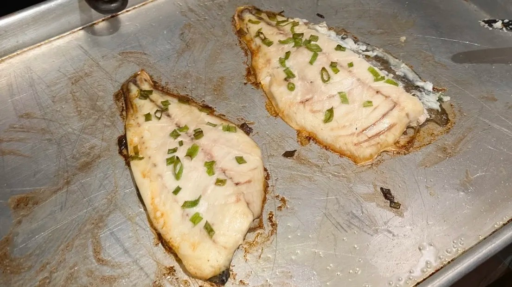

Baked Pompano
A simple baked pompano recipe, perfect for preparing your fish to be used in a sushi roll.

Ingredients
- 2 Pompano Fillets
- 2 Tbsp Butter
- 1 Tsp Lemon Juice
- 1 Scallion, sliced
Recipe
- Preheat oven to 400° F.
- Melt butter in a small bowl and add lemon juice.
- Lay fillets in baking pan and score.
- Brush lemon butter over scored fish, then sprinkle scallions on top.
- Bake for 20 min, the internal temperature should reach 145° F.